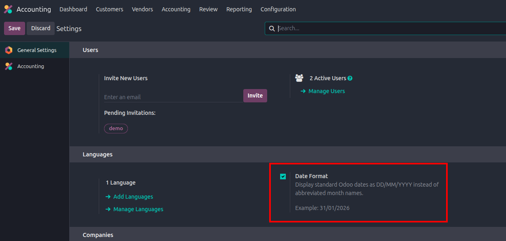

|
|
Odoo 19 Date Format Utility
Legacy DD/MM/YYYY Date Format
Restore a clean numeric date format across Odoo 19 so users see dates like 31/01/2026 instead of abbreviated month formats. |
|
Global Language
Update
Applies the DD/MM/YYYY format to all active and inactive languages, keeping date display consistent for every user language. |
Settings Controlled
Adds a simple Date Format option under General Settings, allowing administrators to enable or disable the behavior when needed. |
|
Backend View
Coverage
Updates standard backend list and form date display so abbreviated month names are replaced with the numeric format. |
Reversible Changes
Original language date formats are backed up and restored when the feature is disabled or the module is uninstalled. |
- Install the module from Apps.
- Open General Settings and enable the Date Format option.
- Upgrade or refresh backend assets if the module was already installed.
- Use Odoo with DD/MM/YYYY date display across supported backend views.

Enable Date Format from General Settings to apply DD/MM/YYYY display.
- Built for Odoo 19.
- No new access rights or menu clutter.
- Suitable for teams that prefer numeric day/month/year dates.
For Odoo-related queries or customization requests, contact theodoobin@gmail.com.